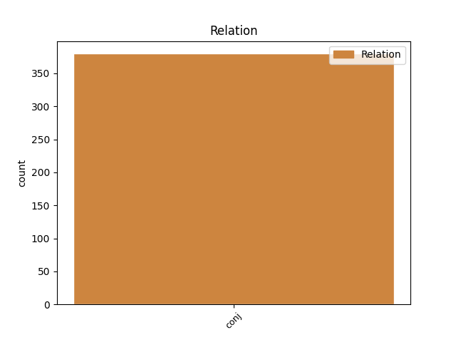
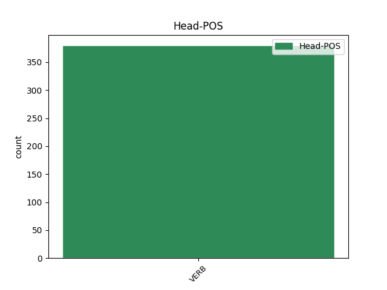
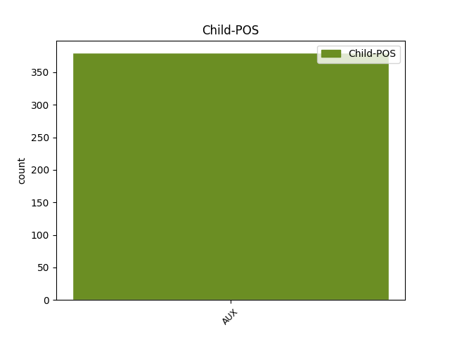

Distribution of features within this leaf



Agreement Rules sorted by frequency.
- When the dependent token is the conjunct(conj) of the head token, and the head token is VERB and the dependent token is AUX.
1 Según _ _ _ _ 0 _ _ _
2 Industria _ _ _ _ 0 _ _ _
3 , _ _ _ _ 0 _ _ _
4 las _ _ _ _ 0 _ _ _
5 ayudas _ _ _ _ 0 _ _ _
6 al _ _ _ _ 0 _ _ _
7 funcionamiento _ _ _ _ 0 _ _ _
8 de _ _ _ _ 0 _ _ _
9 las _ _ _ _ 0 _ _ _
10 minas _ _ _ _ 0 _ _ _
11 superan superar VERB VERB Mood=Ind|Number=Plur|Person=3|Tense=Pres|VerbForm=Fin 0 _ _ _
12 anualmente _ _ _ _ 0 _ _ _
13 los _ _ _ _ 0 _ _ _
14 80.000 _ _ _ _ 0 _ _ _
15 millones _ _ _ _ 0 _ _ _
16 y _ _ _ _ 0 _ _ _
17 en _ _ _ _ 0 _ _ _
18 un _ _ _ _ 0 _ _ _
19 año _ _ _ _ 0 _ _ _
20 y _ _ _ _ 0 _ _ _
21 medio _ _ _ _ 0 _ _ _
22 se _ _ _ _ 0 _ _ _
23 han haber AUX AUX Mood=Ind|Number=Plur|Person=3|Tense=Pres|VerbForm=Fin 11 conj _ _
24 aprobado _ _ _ _ 0 _ _ _
25 proyectos _ _ _ _ 0 _ _ _
26 de _ _ _ _ 0 _ _ _
27 infraestructuras _ _ _ _ 0 _ _ _
28 por _ _ _ _ 0 _ _ _
29 125.000 _ _ _ _ 0 _ _ _
30 millones _ _ _ _ 0 _ _ _
31 . _ _ _ _ 0 _ _ _
Disagree Examples:
1 Esto _ _ _ _ 0 _ _ _
2 permitirá permitir VERB VERB Mood=Ind|Number=Sing|Person=3|Tense=Fut|VerbForm=Fin 0 _ _ _
3 al _ _ _ _ 0 _ _ _
4 banco _ _ _ _ 0 _ _ _
5 sanear _ _ _ _ 0 _ _ _
6 su _ _ _ _ 0 _ _ _
7 portafolio _ _ _ _ 0 _ _ _
8 , _ _ _ _ 0 _ _ _
9 que _ _ _ _ 0 _ _ _
10 es ser AUX AUX Mood=Ind|Number=Sing|Person=3|Tense=Pres|VerbForm=Fin 2 conj _ _
11 condición _ _ _ _ 0 _ _ _
12 básica _ _ _ _ 0 _ _ _
13 para _ _ _ _ 0 _ _ _
14 continuar _ _ _ _ 0 _ _ _
15 en _ _ _ _ 0 _ _ _
16 su _ _ _ _ 0 _ _ _
17 privatización _ _ _ _ 0 _ _ _
18 . _ _ _ _ 0 _ _ _
1 Esta _ _ _ _ 0 _ _ _
2 opinión _ _ _ _ 0 _ _ _
3 fue _ _ _ _ 0 _ _ _
4 corroborada _ _ _ _ 0 _ _ _
5 por _ _ _ _ 0 _ _ _
6 el _ _ _ _ 0 _ _ _
7 presidente _ _ _ _ 0 _ _ _
8 de _ _ _ _ 0 _ _ _
9 Pimec-Sefes _ _ _ _ 0 _ _ _
10 , _ _ _ _ 0 _ _ _
11 Josep _ _ _ _ 0 _ _ _
12 González _ _ _ _ 0 _ _ _
13 , _ _ _ _ 0 _ _ _
14 quien _ _ _ _ 0 _ _ _
15 subrayó _ _ _ _ 0 _ _ _
16 que _ _ _ _ 0 _ _ _
17 esta _ _ _ _ 0 _ _ _
18 falta _ _ _ _ 0 _ _ _
19 de _ _ _ _ 0 _ _ _
20 mano _ _ _ _ 0 _ _ _
21 de _ _ _ _ 0 _ _ _
22 obra _ _ _ _ 0 _ _ _
23 , _ _ _ _ 0 _ _ _
24 tanto _ _ _ _ 0 _ _ _
25 cualificada _ _ _ _ 0 _ _ _
26 como _ _ _ _ 0 _ _ _
27 no _ _ _ _ 0 _ _ _
28 , _ _ _ _ 0 _ _ _
29 comenzó comenzar VERB VERB Mood=Ind|Number=Sing|Person=3|Tense=Past|VerbForm=Fin 0 _ _ _
30 en _ _ _ _ 0 _ _ _
31 las _ _ _ _ 0 _ _ _
32 comarcas _ _ _ _ 0 _ _ _
33 de _ _ _ _ 0 _ _ _
34 Lérida _ _ _ _ 0 _ _ _
35 pero _ _ _ _ 0 _ _ _
36 ya _ _ _ _ 0 _ _ _
37 ha haber AUX AUX Mood=Ind|Number=Sing|Person=3|Tense=Pres|VerbForm=Fin 29 conj _ _
38 llegado _ _ _ _ 0 _ _ _
39 a _ _ _ _ 0 _ _ _
40 todas _ _ _ _ 0 _ _ _
41 las _ _ _ _ 0 _ _ _
42 provincias _ _ _ _ 0 _ _ _
43 catalanas _ _ _ _ 0 _ _ _
44 . _ _ _ _ 0 _ _ _
1 El _ _ _ _ 0 _ _ _
2 doctor _ _ _ _ 0 _ _ _
3 Bhagat _ _ _ _ 0 _ _ _
4 Ram _ _ _ _ 0 _ _ _
5 , _ _ _ _ 0 _ _ _
6 médico _ _ _ _ 0 _ _ _
7 privado _ _ _ _ 0 _ _ _
8 del _ _ _ _ 0 _ _ _
9 depuesto _ _ _ _ 0 _ _ _
10 primer _ _ _ _ 0 _ _ _
11 ministro _ _ _ _ 0 _ _ _
12 fiyiano _ _ _ _ 0 _ _ _
13 , _ _ _ _ 0 _ _ _
14 Mehnedra _ _ _ _ 0 _ _ _
15 Chaudhry _ _ _ _ 0 _ _ _
16 , _ _ _ _ 0 _ _ _
17 dijo _ _ _ _ 0 _ _ _
18 que _ _ _ _ 0 _ _ _
19 varios _ _ _ _ 0 _ _ _
20 de _ _ _ _ 0 _ _ _
21 los _ _ _ _ 0 _ _ _
22 rehenes _ _ _ _ 0 _ _ _
23 llevaban llevar VERB VERB Mood=Ind|Number=Plur|Person=3|Tense=Imp|VerbForm=Fin 0 _ _ _
24 días _ _ _ _ 0 _ _ _
25 con _ _ _ _ 0 _ _ _
26 molestias _ _ _ _ 0 _ _ _
27 y _ _ _ _ 0 _ _ _
28 les _ _ _ _ 0 _ _ _
29 ha haber AUX AUX Mood=Ind|Number=Sing|Person=3|Tense=Pres|VerbForm=Fin 23 conj _ _
30 dado _ _ _ _ 0 _ _ _
31 algo _ _ _ _ 0 _ _ _
32 para _ _ _ _ 0 _ _ _
33 que _ _ _ _ 0 _ _ _
34 descansasen _ _ _ _ 0 _ _ _
35 , _ _ _ _ 0 _ _ _
36 según _ _ _ _ 0 _ _ _
37 Radio _ _ _ _ 0 _ _ _
38 Fiyi _ _ _ _ 0 _ _ _
39 . _ _ _ _ 0 _ _ _
1 El _ _ _ _ 0 _ _ _
2 desempleo _ _ _ _ 0 _ _ _
3 de _ _ _ _ 0 _ _ _
4 los _ _ _ _ 0 _ _ _
5 jóvenes _ _ _ _ 0 _ _ _
6 menores _ _ _ _ 0 _ _ _
7 de _ _ _ _ 0 _ _ _
8 25 _ _ _ _ 0 _ _ _
9 años _ _ _ _ 0 _ _ _
10 se _ _ _ _ 0 _ _ _
11 redujo reducir VERB VERB Mood=Ind|Number=Sing|Person=3|Tense=Past|VerbForm=Fin 0 _ _ _
12 en _ _ _ _ 0 _ _ _
13 mayo _ _ _ _ 0 _ _ _
14 en _ _ _ _ 0 _ _ _
15 12.463 _ _ _ _ 0 _ _ _
16 personas _ _ _ _ 0 _ _ _
17 , _ _ _ _ 0 _ _ _
18 un _ _ _ _ 0 _ _ _
19 4,61 _ _ _ _ 0 _ _ _
20 por _ _ _ _ 0 _ _ _
21 ciento _ _ _ _ 0 _ _ _
22 , _ _ _ _ 0 _ _ _
23 y _ _ _ _ 0 _ _ _
24 su _ _ _ _ 0 _ _ _
25 tasa _ _ _ _ 0 _ _ _
26 de _ _ _ _ 0 _ _ _
27 paro _ _ _ _ 0 _ _ _
28 es ser AUX AUX Mood=Ind|Number=Sing|Person=3|Tense=Pres|VerbForm=Fin 11 conj _ _
29 del _ _ _ _ 0 _ _ _
30 10,41 _ _ _ _ 0 _ _ _
31 por _ _ _ _ 0 _ _ _
32 ciento _ _ _ _ 0 _ _ _
33 . _ _ _ _ 0 _ _ _
1 El _ _ _ _ 0 _ _ _
2 documento _ _ _ _ 0 _ _ _
3 propone _ _ _ _ 0 _ _ _
4 que _ _ _ _ 0 _ _ _
5 el _ _ _ _ 0 _ _ _
6 Care _ _ _ _ 0 _ _ _
7 afecte afectar VERB VERB Mood=Sub|Number=Sing|Person=1|Tense=Pres|VerbForm=Fin 0 _ _ _
8 a _ _ _ _ 0 _ _ _
9 las _ _ _ _ 0 _ _ _
10 personas _ _ _ _ 0 _ _ _
11 que _ _ _ _ 0 _ _ _
12 engrosen _ _ _ _ 0 _ _ _
13 las _ _ _ _ 0 _ _ _
14 listas _ _ _ _ 0 _ _ _
15 del _ _ _ _ 0 _ _ _
16 paro _ _ _ _ 0 _ _ _
17 " _ _ _ _ 0 _ _ _
18 a _ _ _ _ 0 _ _ _
19 partir _ _ _ _ 0 _ _ _
20 de _ _ _ _ 0 _ _ _
21 1 _ _ _ _ 0 _ _ _
22 de _ _ _ _ 0 _ _ _
23 enero _ _ _ _ 0 _ _ _
24 del _ _ _ _ 0 _ _ _
25 2001 _ _ _ _ 0 _ _ _
26 " _ _ _ _ 0 _ _ _
27 , _ _ _ _ 0 _ _ _
28 a _ _ _ _ 0 _ _ _
29 las _ _ _ _ 0 _ _ _
30 cuales _ _ _ _ 0 _ _ _
31 se _ _ _ _ 0 _ _ _
32 les _ _ _ _ 0 _ _ _
33 ofrecerá _ _ _ _ 0 _ _ _
34 una _ _ _ _ 0 _ _ _
35 ayuda _ _ _ _ 0 _ _ _
36 personalizada _ _ _ _ 0 _ _ _
37 para _ _ _ _ 0 _ _ _
38 encontrar _ _ _ _ 0 _ _ _
39 trabajo _ _ _ _ 0 _ _ _
40 y _ _ _ _ 0 _ _ _
41 una _ _ _ _ 0 _ _ _
42 mejora _ _ _ _ 0 _ _ _
43 del _ _ _ _ 0 _ _ _
44 subsidio _ _ _ _ 0 _ _ _
45 , _ _ _ _ 0 _ _ _
46 pero _ _ _ _ 0 _ _ _
47 serán ser AUX AUX Mood=Ind|Number=Plur|Person=3|Tense=Fut|VerbForm=Fin 7 conj _ _
48 sancionados _ _ _ _ 0 _ _ _
49 económicamente _ _ _ _ 0 _ _ _
50 si _ _ _ _ 0 _ _ _
51 no _ _ _ _ 0 _ _ _
52 respetan _ _ _ _ 0 _ _ _
53 los _ _ _ _ 0 _ _ _
54 compromisos _ _ _ _ 0 _ _ _
55 adquiridos _ _ _ _ 0 _ _ _
56 . _ _ _ _ 0 _ _ _